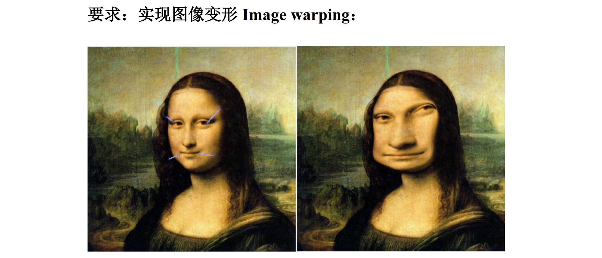
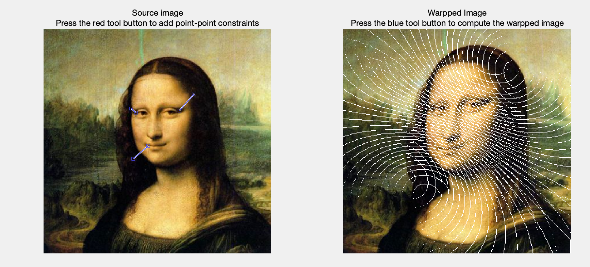
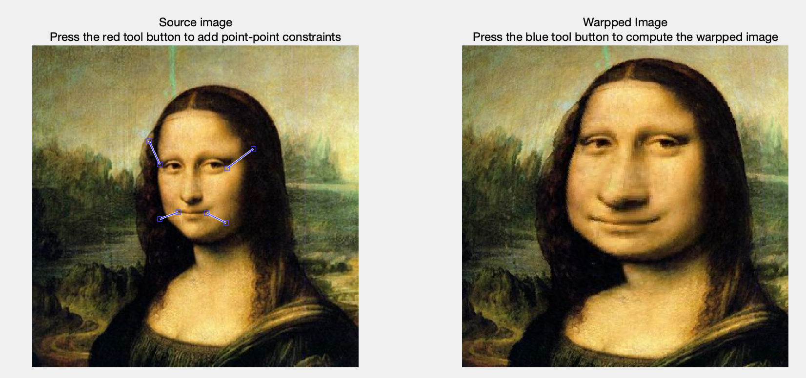

Lab2¶
背景介绍¶

也就是输入一系列源点 p_i 和终点 q_i，让源点移动到终点的位置，并且其他点受形变影响产生畸变。这里 p_i,q_i\in\text{int}^{1\times2}。
原理介绍¶
Radial basis function interpolation method (RBF): Nur Arad and Daniel Reisfeld. Image Warping Using Few Anchor Points and Radial Functions. Computer Graphics Forum, 14(1): 35-46, 1995.
注：根据老师的讲解，这里的原理和文档上的有区别。
映射函数 \displaystyle f(x)=\sum_{i=1}^na_ib_i(x)\quad b_i(x)=\frac{1}{|x-p_i|^2+d}
x：表示一个像素的 [x_p,y_p] 值
a_i：一列待定变量，是 $\text{double}^{1\times 2} $ 的
b_i(·)：是一个标量，其中 d 是常数
为了解出 f(x)，需要求解方程组： $$ f(p_i)=q_i-p_i,\quad i=1,...,n $$ 可以写成矩阵形式： $$ \begin{bmatrix} b_1(p_1) & ... & b_n(p_1)\ \vdots & \ddots & \vdots \ b_1(p_n) & ... & b_n(p_n) \end{bmatrix} \begin{bmatrix} a_1\ \vdots\ a_n \end{bmatrix}= \begin{bmatrix} q_1-p_1\ \vdots\ q_n-p_n \end{bmatrix} $$ 记为 BA=Q-P，求解这个线性方程组即可得到 A，也就是解出了映射。注意到这里的 B 其实是对称的矩阵，即 b_i(p_j)=b_j(p_i)。
随后，对于每个像素位置 [i,j]，其偏移量为 f([i,j])，其移动的目标位置为 $$ [i,j]+f([i,j]) $$
Matlab 实现 #1¶
计算 A 矩阵¶
%% critical: 图形遍历是先高后宽，所以把 x,y 互换一下
psrc(:,[1,2]) = psrc(:,[2,1]);
pdst(:,[1,2]) = pdst(:,[2,1]);
dists = pdist2(psrc, psrc).^2; %% 使用 pdist2 函数计算欧氏距离
bp_map = 1 ./ (dists + d); %% ./ 表示在每个元素上操作
A = bp_map \ (pdst - psrc); %% 使用 \ 直接求解线性方程组
对每个像素点投影¶
for i = 1:h
for j = 1:w
%% 对于 im 图像中每个像素点位置 x = [i,j]
x = [i, j];
%% 计算所有的 bi(x)
b = 1 ./ (pdist2(x, psrc).^2 + d);
%% 直接相乘得到 f(x)
f = b * A;
%% 获得 x 变换后的坐标 [ii,jj]
ii = ceil(f(1)) + i;
jj = ceil(f(2)) + j;
%% 获得 [ii,jj] 后，把其颜色改成原节点的
if (ii > 0 && ii <= h && jj > 0 && jj <= w)
im2(ii, jj, :) = im(i, j, :);
end
end
end
结果¶
适用范围与 d 有关，d 小可以做精细调整，d 大可以做大范围的调整。实际上如果取 d 与源汇的最远距离有关，可以做到自适应。不过这里还是选 d 是个常数。

Matlab 实现 #2¶
上面的实现有 Bug，因为原图片 im 在 im2 上投不满，所以造成白线，解决思路：
- 生成图像之后，让白色的像素颜色等于其最近的非白色像素颜色
- 使用后向投影，即让 im2 的每个像素去 im 中找应该等于什么颜色
这里记录一下后向投影的做法。假设我们已经得到了映射 f，我们希望对 im2 的每个位置 [i,j] 找到 im 中的结果，也就是解方程 $$ f(x)+x=[i,j] $$ 解这个方程的开销相当大（非线性，需要用工具库计算），让我们来看看 ChatGPT 贡献的一种解法：
定义 S=\begin{bmatrix} 1 & ... & 1\\ \vdots & \cdots & \vdots\\ h & ... & h \end{bmatrix}\in\text{int}^{h\times w}，D=\begin{bmatrix} 1 & ... & w\\ \vdots & \cdots & \vdots\\ 1 & ... & w \end{bmatrix}\in\text{int}^{h\times w}，然后，创建了两个矩阵 F_1,F_2\in\text{double}^{h\times w}，初始化为全 0，然后，对于遍历变量 k\in [1:n]：
- 计算矩阵 \displaystyle\tilde Q_{ijk}=\frac{1}{|[i,j]-p_k|^2+d}，上面定义的 S,D 会让 Matlab 代码好写一点
- \displaystyle F_1=\sum_{k=1}^na_{k1}\tilde Q_k，\displaystyle F_2=\sum_{k=1}^na_{k2}\tilde{Q}_k
- F_1=F_1+S，F_2=F_2+D，然后把坐标都取整
这样，对于 im2 中的位置 [i,j]，其在 im 中的色彩来源是 [(F_1)_{ij},(F_2)_{ij}]。
如果 [(F_1)_{ij},(F_2)_{ij}] 溢出了 h\times w 范围，则填补黑色。
代码如下：
dists = pdist2(pdst, pdst).^2;
bp_map = 1 ./ (dists + d);
A = bp_map \ (psrc - pdst);
src = transpose(meshgrid(1:h,1:w));
dst = meshgrid(1:w,1:h);
rever_f = zeros(h, w, 2);
for k = 1:n
q = 1 ./ ((src - pdst(k,1)).^2 + (dst - pdst(k,2)).^2 + d);
rever_f(:,:,1) = rever_f(:,:,1) + A(k,1) * q;
rever_f(:,:,2) = rever_f(:,:,2) + A(k,2) * q;
end
rever_f = round(rever_f + cat(3, src, dst));
for i = 1:h
for j = 1:w
x = rever_f(i, j, 1);
y = rever_f(i, j, 2);
if x < 1 || x > h || y < 1 || y > w
im2(i,j,:) = [0,0,0];
else
im2(i,j,:) = im(x, y, :);
end
end
end
结果¶
没有白条纹出现。

其他想说的¶
可恶，怎么第二次实验开始就 Matlab 了
实验结束后，尝试用 C++ opencv 库进行框架搭建，和 Python 上的版本也差不多，OK 那这个实验对 C++ 的贡献就是让我知道了 C++ 也可以方便地使用 opencv）